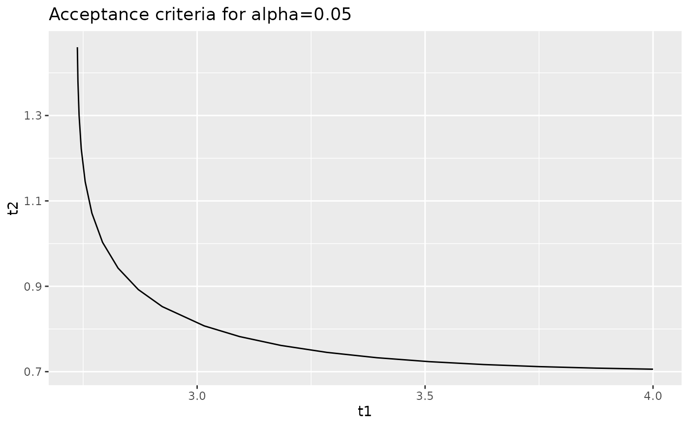

Calculate t1 and t2 pairs that have the same p-Value
Source:R/RcppExports.R
iso_equiv_two_sample.RdCalculates pairs of t1 and t2 values, which have the same p-value for the
two-sample equivalency test. See p_equiv_two_sample().
Details
The values t1 and t2 are based on the transformation:
t1 = (X_mean - Y_min) / S
t2 = (X_mean - Y_mean) / S
Where:
X_mean is the mean of the qualification sample
S is the standard deviation of the qualification sample
Y_min is the minimum from the acceptance sample
Y_mean is the mean of the acceptance sample
References
Kloppenborg, S. (2023). Lot acceptance testing using sample mean and extremum with finite qualification samples. Journal of Quality Technology, https://doi.org/10.1080/00224065.2022.2147884
Examples
# \donttest{
if(requireNamespace("tidyverse")){
library(cmstatrExt)
library(tidyverse)
curve <- iso_equiv_two_sample(24, 8, 0.05, 4, 1.5, 10)
curve
curve %>%
ggplot(aes(x = t1, y = t2)) +
geom_path() +
ggtitle("Acceptance criteria for alpha=0.05")
}
#> ── Attaching core tidyverse packages ──────────────────────── tidyverse 2.0.0 ──
#> ✔ dplyr 1.2.0 ✔ readr 2.2.0
#> ✔ forcats 1.0.1 ✔ stringr 1.6.0
#> ✔ ggplot2 4.0.2 ✔ tibble 3.3.1
#> ✔ lubridate 1.9.5 ✔ tidyr 1.3.2
#> ✔ purrr 1.2.1
#> ── Conflicts ────────────────────────────────────────── tidyverse_conflicts() ──
#> ✖ dplyr::filter() masks stats::filter()
#> ✖ dplyr::lag() masks stats::lag()
#> ℹ Use the conflicted package (<http://conflicted.r-lib.org/>) to force all conflicts to become errors

# }